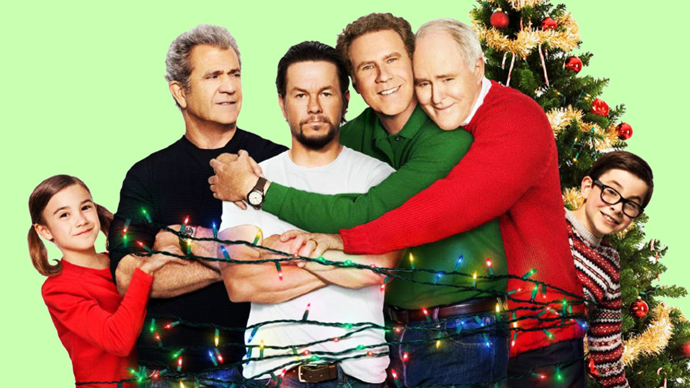

Guerra de Papas 280% de coincidencia 1 h 50 minEl gruñón papá de Dusty y el excesivamente cariñoso papá de Brad llegan de visita por Navidad. Pese al caos que generan sus padres, Dusty y Brad intentan dejar a un lado sus diferencias y ofrecerles unas Navidades inolvidables.REPRODUCIRTRAILERProtagonistas: Mark Whalveg, Will Ferrer, Mell Gibson. Genero: Comedia.
 TRAILER
TRAILER